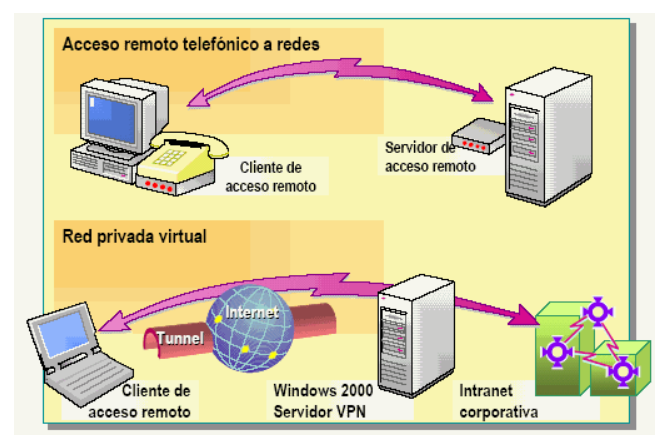

Datos básicos sobre redes

Una red es una estructura que conecta nodos (elementos) mediante enlaces (relaciones) para permitir la comunicación, el intercambio y la cooperación entre ellos.
- Dirección IP:Una dirección IP es un número único asignado a cada dispositivo conectado a una red que utiliza el Protocolo de Internet para la comunicación. La dirección IP identifica al dispositivo y permite enviar y recibir datos entre él y otros dispositivos. Un switch es un dispositivo que actúa como un controlador, que conecta computadoras, impresoras y servidores a una red en un edificio o campus. Los switches permiten que los dispositivos en la red se comuniquen entre sí, así como con otras redes.
- Router: Un router es un dispositivo que conecta varias redes. También conecta computadoras en esas redes a Internet. Los routers permiten que todas las computadoras en la red compartan una única conexión a Internet, y analizan los datos que se envían a través de la red para elegir la mejor ruta para ellos
- Punto de acceso inalámbrico: Un access point es un dispositivo que permite que los dispositivos se conecten a la red inalámbrica sin cables. Un access point crea una zona de cobertura inalámbrica dentro de la red, y puede ampliar el alcance de la señal de Wi-Fi
- Wi-Fi de largo alcance: Wi-Fi es una marca que se utiliza para referirse a redes inalámbricas de conexión a Internet que trabajan con ondas de radio en las bandas de 2,4 GHz, 5 GHz y 6 GHz, dependiendo de los estándares Wi-Fi. Wi-Fi permite conectar dispositivos sin cables a una red local o a Internet
- Ethernet: Ethernet es un estándar de redes de área local que trabaja mediante cable. Ethernet permite conectar dispositivos con cables a una red local o a Internet. Ethernet ofrece diferentes velocidades de transmisión de datos, que pueden ir desde los 10 Mbps hasta varios gigabits por segundo
- Servidor proxy: Un proxy es un servidor que hace de intermediario cuando se realizan peticiones de recursos de un medio a otro. Un proxy puede mejorar la seguridad, la privacidad y el rendimiento de la red, al ocultar la dirección IP del dispositivo que hace la petición, al filtrar el contenido no deseado y al almacenar en caché los recursos más solicitados
- Red privada virtual: Una VPN es una red privada virtual que permite enviar y recibir datos en una red pública como si fuera una red privada. Una VPN crea un túnel cifrado entre el dispositivo y el servidor VPN, y puede mejorar la seguridad, la privacidad y el acceso a la red, al proteger los datos de posibles interceptaciones, al ocultar la dirección IP del dispositivo y al superar las restricciones geográficas o de censura
- Red biológica: Una red biológica es una red que modela los procesos y las estructuras de los sistemas biológicos, como las células, los tejidos, los órganos, los organismos, las poblaciones, etc. Una red biológica puede ser de diferentes tipos, como redes metabólicas, redes genéticas, redes neuronales, redes ecológicas, etc. Las redes biológicas se utilizan para comprender la función, la regulación y la evolución de los sistemas biológicos
Conectividad de acceso remoto
Windows server y otros sistemas operativos de características de servidores, permiten a los usuarios conectarse a una red desde una ubicación remota utilizando una diversidad de hardware, como módems.Un módem permite a un equipo comunicarse a través de líneas telefónicas.
El cliente de acceso remoto se conecta al servidor de acceso remoto, que actúa de enrutador o de puerta de enlace, para el cliente a la red remota. Una línea telefónica proporciona habitualmente la conectividad física entre el cliente y el servidor. El servidor de acceso remoto ejecuta la característica de enrutamiento y acceso remoto de para soportar conexiones remotas y proporcionar interoperabilidad con otras soluciones de acceso remoto.
Un tipo de conectividad de acceso remoto proporcionados en Windows 2000/3 server son el acceso telefónico a redes y la red privada virtual (VPN).
- Acceso remoto telefónico a redes: Windows 2000/3 Server proporciona un acceso remoto telefónico a los usuarios que realizan llamadas a intranets empresariales. El equipo de acceso telefónico instalado en un servidor de acceso remoto ejecutando Windows 2000/3 responde peticiones de conexión entrantes desde clientes de acceso telefónico remotos.